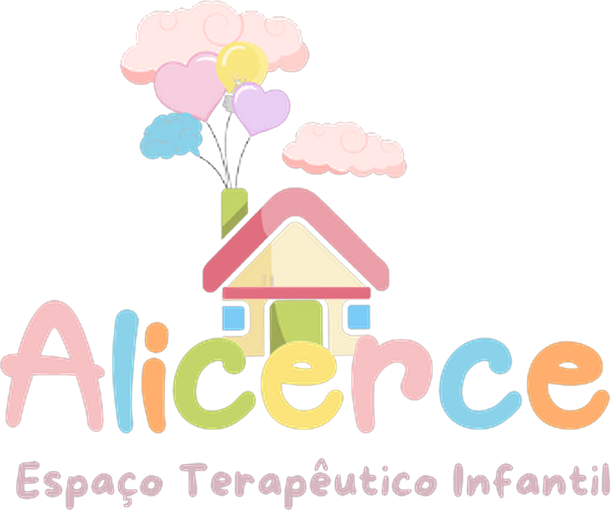

Visualização completa dos dados globais sobre o Transtorno do Espectro Autista (TEA), com base nos relatórios oficiais da Organização Mundial da Saúde, Global Burden of Disease Study 2021 e IBGE 2025.
Primeira publicação oficial de dados de autismo na história do Brasil, divulgada em maio de 2025 com base no Censo Demográfico 2022.
O tratamento do autismo é mais eficaz quando conduzido por profissionais que trabalham de forma integrada. Conheça o papel de cada especialidade e o impacto que ela gera na vida de quem tem TEA e de toda a família.
Para famílias que acabaram de receber um diagnóstico — ou que já estão nessa jornada há anos — entender o papel do terapeuta ocupacional pode mudar o rumo do tratamento e a qualidade de vida de toda a família.
"O terapeuta ocupacional não ensina a criança a ser diferente — ele a ajuda a se tornar mais ela mesma, com mais autonomia, mais confiança e mais presença no mundo."
— Perspectiva clínica em Terapia Ocupacional PediátricaO Terapeuta Ocupacional (TO) é o profissional de saúde especializado em ajudar pessoas a realizarem as atividades do dia a dia — chamadas de "ocupações" — com mais independência e qualidade. No contexto do TEA, a atuação envolve o lar, a escola, o brincar, as refeições, o sono e a socialização. A base do trabalho é entender como aquela criança percebe e processa o mundo e a partir daí construir pontes entre as suas capacidades e os desafios que enfrenta.
⚠️ Como interpretar: os percentuais representam a redução nos escores da Escala ABC em cada domínio — ou seja, quanto os comportamentos problemáticos diminuíram em relação à linha de base. Não indica que a criança "melhorou X% do autismo", mas sim que as dificuldades naquele domínio específico reduziram nessa proporção após a intervenção.
⚠️ Importante: as evoluções descritas abaixo representam possibilidades observadas em tratamentos — não uma regra ou garantia. Cada pessoa com TEA é única, e o progresso varia conforme o perfil, a intensidade do acompanhamento e outros fatores individuais.
A Terapia Ocupacional não promete "curar" o autismo — porque o autismo não é uma doença a ser curada. Ela promete algo muito mais valioso:
E um detalhe importante: quanto mais cedo o acompanhamento começa, maiores são os ganhos. O cérebro da criança pequena tem uma plasticidade enorme — e a TO sabe exatamente como aproveitá-la.
O psicólogo é o profissional que ajuda a criança com TEA a entender e regular suas emoções, desenvolver habilidades sociais e comportamentais, e a família a encontrar estratégias para os desafios do dia a dia — com base em evidências científicas sólidas.
"O psicólogo não trata o autismo — trata a pessoa. Cada comportamento tem um significado, e nossa tarefa é ajudar a criança a encontrar formas melhores de se expressar e se conectar com o mundo."
— Perspectiva clínica em Psicologia do NeurodesenvolvimentoO psicólogo especializado em TEA atua em múltiplas frentes: avalia o perfil cognitivo, emocional e comportamental da criança ou adolescente; aplica intervenções baseadas em evidências como ABA e TCC; trabalha a autorregulação emocional; e orienta a família sobre como responder aos comportamentos de forma construtiva. Seu trabalho é essencial tanto para a criança quanto para os cuidadores — que muitas vezes também precisam de suporte para atravessar o processo do diagnóstico e do tratamento.
⚠️ Importante: as evoluções descritas abaixo representam possibilidades observadas em tratamentos — não uma regra ou garantia. Cada pessoa com TEA é única, e o progresso varia conforme o perfil, a intensidade do acompanhamento e outros fatores individuais.
Comportamentos desafiadores, crises, dificuldades em fazer amigos — tudo isso pode ser exaustivo para os pais. Mas cada comportamento tem uma causa, e o psicólogo é o profissional que ajuda a decifrar esse código.
Quanto mais cedo a intervenção psicológica começa, maior é o impacto. A plasticidade cerebral nos primeiros anos de vida é o maior aliado do tratamento.
A comunicação é a ponte entre a pessoa com TEA e o mundo. O fonoaudiólogo é o especialista em construir essa ponte — seja pela fala, por imagens, por gestos ou por tecnologia — garantindo que toda criança tenha uma voz, de alguma forma.
"Comunicação não é só falar — é ser compreendido. Nosso trabalho é encontrar o canal pelo qual essa criança pode ser ouvida pelo mundo, seja com palavras, imagens ou gestos."
— Perspectiva clínica em Fonoaudiologia e Comunicação AumentativaO fonoaudiólogo avalia e trata todos os aspectos da comunicação humana — fala, linguagem, voz, fluência, processamento auditivo e deglutição. No TEA, seu papel vai muito além do desenvolvimento da fala oral: ele atua na compreensão, na intenção comunicativa, na linguagem social e, quando necessário, na implementação de sistemas de comunicação alternativa que permitem à criança se expressar mesmo sem a fala.
⚠️ Importante: as evoluções descritas abaixo representam possibilidades observadas em tratamentos — não uma regra ou garantia. Cada pessoa com TEA é única, e o progresso varia conforme o perfil, a intensidade do acompanhamento e outros fatores individuais.
Muitos pais temem que seus filhos com TEA "nunca vão falar". Esse medo é compreensível — mas o fonoaudiólogo sabe que comunicação vai muito além da fala oral.
A comunicação é a chave que abre todas as outras portas do desenvolvimento. Investir na fonoaudiologia é investir em tudo.
O corpo é o primeiro instrumento de aprendizagem. No TEA, dificuldades motoras são mais comuns do que se imagina — e o fisioterapeuta é o profissional que ajuda a criança a se mover com mais confiança, coordenação e autonomia, abrindo portas para todo o seu desenvolvimento.
"O corpo é o primeiro instrumento de aprendizagem. Quando ajudamos a criança com TEA a se mover com mais confiança, abrimos portas para todo o seu desenvolvimento cognitivo, social e emocional."
— Perspectiva clínica em Fisioterapia Pediátrica e NeurodesenvolvimentoO fisioterapeuta avalia e trata o desenvolvimento neuropsicomotor, o tônus muscular, o equilíbrio, a postura e a coordenação motora. No TEA, muitas crianças apresentam hipotonia (baixo tônus muscular), dificuldades de coordenação, atraso no desenvolvimento motor e dispráxia — condições que comprometem a participação na escola, nas brincadeiras e nas atividades cotidianas. A fisioterapia especializada trabalha todos esses aspectos de forma lúdica e motivadora.
⚠️ Importante: as evoluções descritas abaixo representam possibilidades observadas em tratamentos — não uma regra ou garantia. Cada pessoa com TEA é única, e o progresso varia conforme o perfil, a intensidade do acompanhamento e outros fatores individuais.
Muitas famílias não associam as dificuldades motoras ao TEA — mas elas são muito mais frequentes do que parecem e têm um impacto enorme na vida diária da criança.
O movimento é a linguagem do corpo. Quando a criança aprende a se mover com mais segurança, ela aprende também a confiar em si mesma.
No TEA, o jeito de aprender é único — e o sistema escolar nem sempre está preparado para isso. O psicopedagogo é o profissional que decifra como cada criança aprende e cria as estratégias certas para que o conhecimento chegue até ela de verdade.
"Cada criança tem um jeito único de aprender. Nossa missão é descobrir esse jeito e transformá-lo em ponte para o conhecimento — porque toda criança com TEA tem muito mais capacidade do que os rótulos sugerem."
— Perspectiva clínica em Psicopedagogia e Educação InclusivaO psicopedagogo investiga como a criança aprende, onde estão os bloqueios e o que pode ser feito para superá-los. No TEA, esse trabalho envolve avaliar o perfil de aprendizagem (visual, cinestésico, auditivo), identificar dificuldades em leitura, escrita e matemática, trabalhar as funções executivas (atenção, planejamento, memória de trabalho) e orientar a escola na criação de um ambiente inclusivo e eficaz para aquela criança específica.
⚠️ Importante: as evoluções descritas abaixo representam possibilidades observadas em tratamentos — não uma regra ou garantia. Cada pessoa com TEA é única, e o progresso varia conforme o perfil, a intensidade do acompanhamento e outros fatores individuais.
A escola pode ser um lugar de sofrimento para a criança com TEA — ou um lugar de descoberta. A diferença está no suporte certo. O psicopedagogo é um aliado poderoso para transformar essa experiência.
Toda criança com TEA merece uma escola que a entenda. O psicopedagogo trabalha para que isso deixe de ser exceção e se torne regra.
O que uma criança come afeta como ela se sente, como ela pensa e como ela se comporta. No TEA, a seletividade alimentar é uma das queixas mais frequentes — e a nutricionista especializada tem estratégias específicas para transformar a relação da criança com a comida.
"O que uma criança come afeta como ela se sente, como ela pensa e como ela se comporta. Nutrição no TEA não é restrição — é cuidado que alimenta o desenvolvimento de dentro para fora."
— Perspectiva clínica em Nutrição Pediátrica e NeurodesenvolvimentoA nutricionista especializada em TEA vai muito além do cardápio. Ela avalia o estado nutricional, investiga deficiências e excessos, entende as origens sensoriais da seletividade alimentar (textura, cor, cheiro, temperatura), cria estratégias de introdução gradual de alimentos e trabalha a relação entre saúde intestinal, microbiota e comportamento — uma conexão cada vez mais estudada na literatura científica sobre TEA.
⚠️ Importante: as evoluções descritas abaixo representam possibilidades observadas em tratamentos — não uma regra ou garantia. Cada pessoa com TEA é única, e o progresso varia conforme o perfil, a intensidade do acompanhamento e outros fatores individuais.
Hora da refeição virou uma batalha? A criança só come 5 alimentos? Isso é muito mais comum no TEA do que se imagina — e tem solução com a abordagem certa.
Cuidar da nutrição de uma criança com TEA é cuidar do seu cérebro. Uma alimentação mais completa é um desenvolvimento mais completo.
Cuide de quem você ama com informação e acompanhamento especializado.
Este painel foi desenvolvido para o Abril Azul — Mês de Conscientização sobre Autismo · 2026